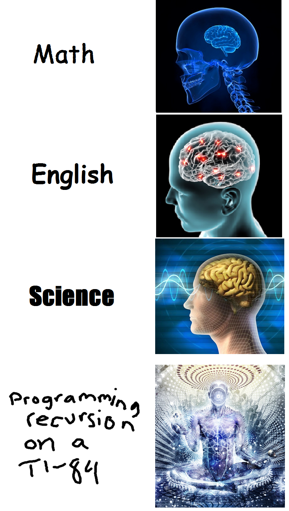

This page has slightly more advanced commands and assumes you already know the very basics shown on TI-(very)-Basic.

Y-Vars
Found near the same menu as String variables, Y-Vars are a very useful tool on graphing calculators.
When you set the Y1= function on the calculator, it essentially maps that as a function between X and Y1 this means for whatever value of X is given, Y1 will have the corresponding value. You can use this to iterate with X and replicate a function as shown in the second example piece.
Recursion
In the program editor, when you press "PRGM" the last tab available is the programs tab.
This allows you to run other programs in the middle of the currently running program. You can see this would be useful for recursion
By calling the currently running program and keeping track of a few variables, one can effectively program recursion on your calculator.
If you want a bit of a challenge, try programming a binary search ;)